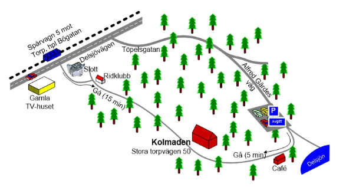
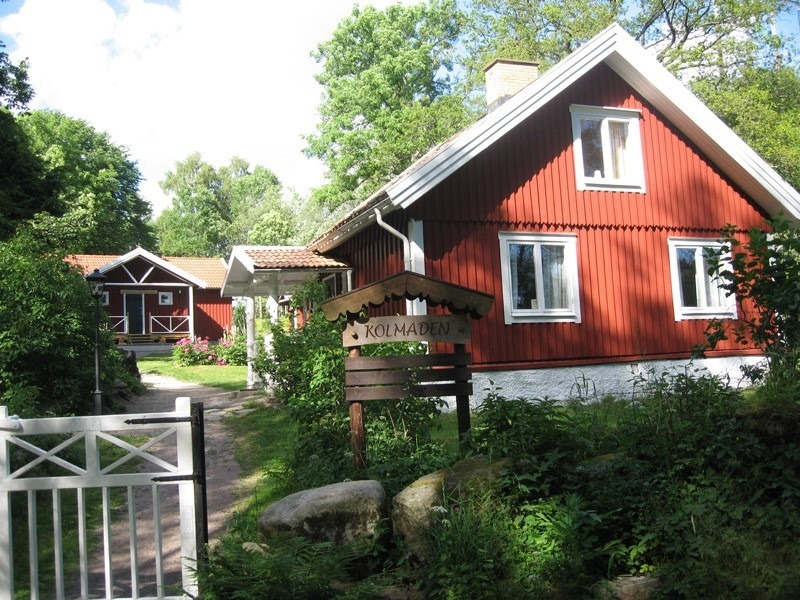
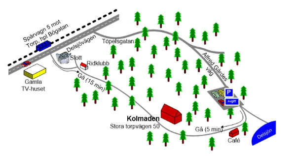
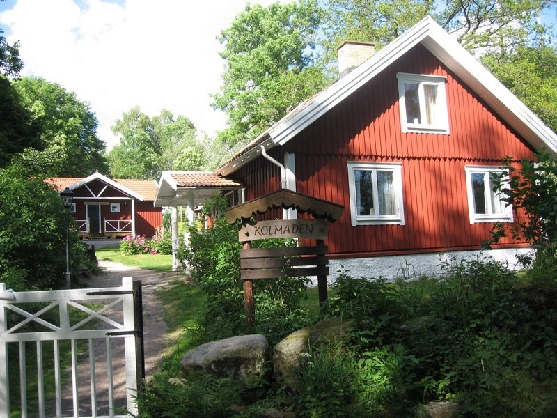

Where
The wedding location is in the nature reserve Delsjön, in a house called Kalmaden. The venue is accessible by tram number 5, with a 20 minutes walk. We hope to be outdoors a lot. The building is a wooden construction in rustic style. The page of the venue.
 


